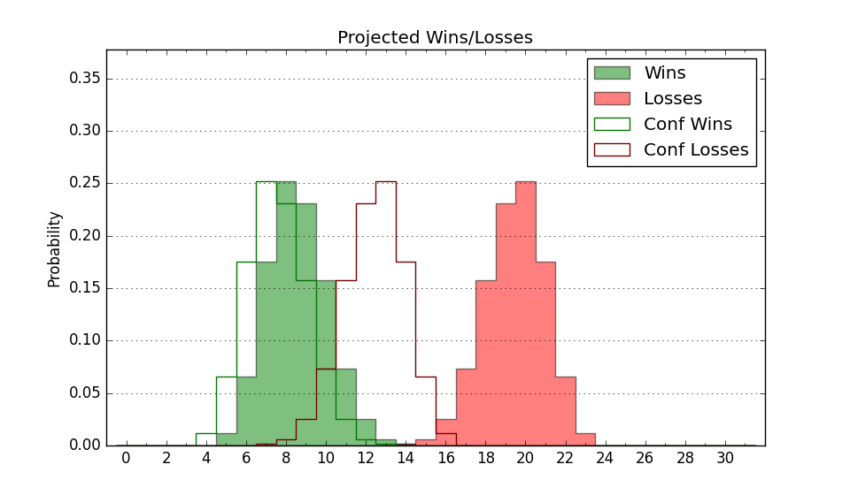

| Home | Game Probabilities | Conferences | Preseason Predictions | Odds Charts | NCAA Tournament |
| City: | Riverdale, New York | |
| Conference: | Metro Atlantic (4th)
| |
| Record: | 12-8 (Conf) 16-13 (Overall) | |
| Ratings: | Comp.: -9.9 (270th) Net: -9.9 (270th) Off: 105.8 (190th) Def: 115.7 (330th) SoR: 0.0 (103rd) |
| Remaining | ||||||
|---|---|---|---|---|---|---|
| Date | Opponent | Win Prob | Pred. | |||
| Previous | Game Score | |||||
| Date | Opponent | Win Prob | Result | Off | Def | Net |
| 11/4 | @Maryland (11) | 1.1% | L 49-79 | -17.2 | 20.0 | 2.8 |
| 11/15 | Fordham (236) | 57.4% | W 78-76 | -9.0 | 12.5 | 3.5 |
| 11/17 | @Fairleigh Dickinson (304) | 44.5% | L 82-85 | 8.0 | -9.4 | -1.5 |
| 11/22 | Army (322) | 77.1% | W 80-79 | -6.0 | -6.4 | -12.5 |
| 11/26 | @Virginia (107) | 10.1% | L 65-74 | 5.5 | 2.3 | 7.8 |
| 11/29 | Le Moyne (352) | 86.3% | L 77-81 | -22.5 | -6.1 | -28.5 |
| 12/6 | @Saint Peter's (300) | 42.6% | W 70-67 | -0.7 | 11.7 | 11.0 |
| 12/8 | Marist (267) | 64.5% | L 75-82 | -2.9 | -18.6 | -21.5 |
| 12/18 | @Wagner (344) | 59.0% | W 80-66 | 21.8 | -1.9 | 19.9 |
| 12/21 | @Presbyterian (240) | 29.3% | W 86-81 | 9.3 | 1.3 | 10.5 |
| 1/3 | @Siena (260) | 32.8% | L 95-103 | 0.8 | -3.0 | -2.2 |
| 1/5 | @Rider (321) | 49.5% | W 80-79 | 8.2 | -5.0 | 3.2 |
| 1/10 | Mount St. Mary's (264) | 63.7% | L 66-75 | -12.6 | -8.6 | -21.2 |
| 1/12 | @Merrimack (196) | 21.4% | L 62-69 | 1.9 | 3.8 | 5.7 |
| 1/18 | Niagara (332) | 79.5% | W 72-65 | 0.7 | -0.9 | -0.2 |
| 1/23 | Fairfield (338) | 81.5% | L 84-87 | -6.2 | -16.6 | -22.8 |
| 1/25 | @Mount St. Mary's (264) | 34.0% | W 74-64 | 8.2 | 8.9 | 17.1 |
| 1/31 | Iona (271) | 66.2% | W 76-55 | 5.8 | 18.0 | 23.7 |
| 2/2 | @Sacred Heart (277) | 37.9% | L 72-74 | -18.4 | 18.2 | -0.2 |
| 2/8 | Saint Peter's (300) | 71.6% | W 84-83 | 12.7 | -22.3 | -9.6 |
| 2/14 | Merrimack (196) | 48.2% | W 79-75 | 9.5 | -4.4 | 5.1 |
| 2/16 | @Fairfield (338) | 56.4% | W 80-67 | 9.4 | 6.7 | 16.2 |
| 2/21 | @Iona (271) | 36.5% | L 60-65 | -14.4 | 12.9 | -1.5 |
| 2/23 | Quinnipiac (222) | 54.1% | L 71-74 | -9.4 | 0.7 | -8.7 |
| 2/28 | @Canisius (360) | 75.5% | W 77-72 | -3.0 | 0.3 | -2.7 |
| 3/2 | @Niagara (332) | 53.2% | W 85-70 | 30.9 | -3.9 | 27.0 |
| 3/6 | Sacred Heart (277) | 67.5% | W 90-74 | 16.2 | -1.0 | 15.2 |
| 3/8 | Siena (260) | 62.5% | W 78-66 | -4.6 | 18.0 | 13.4 |
| 3/13 | (N) Iona (271) | 51.5% | L 65-77 | -10.3 | -12.0 | -22.3 |
| Stats & Trends | |||||
|---|---|---|---|---|---|
| Current | Day | Week | Month | Season | |
| Composite | -9.9 | -- | -- | -- | +7.0 |
| Comp Rank | 270 | -- | -- | -- | +69 |
| Net Efficiency | -9.9 | -- | -- | -- | -- |
| Net Rank | 270 | -- | -- | -- | -- |
| Off Efficiency | 105.8 | -- | -- | -- | -- |
| Off Rank | 190 | -- | -- | -- | -- |
| Def Efficiency | 115.7 | -- | -- | -- | -- |
| Def Rank | 330 | -- | -- | -- | -- |
| SoS Rank | 360 | -- | -- | -- | -- |
| Exp. Wins | 16.0 | -- | -- | -- | +5.7 |
| Exp. Conf Wins | 12.0 | -- | -- | -- | +4.2 |
| Conf Champ Prob | 0.0 | -- | -- | -- | -1.7 |

| Advanced Stats | ||
|---|---|---|
| Stat | Value | Rank |
| Off Eff FG % | 0.489 | 244 |
| Off Ast Ratio | 0.147 | 169 |
| Off ORB% | 0.291 | 182 |
| Off TO Rate | 0.141 | 132 |
| Off FT Ratio | 0.291 | 291 |
| Def Eff FG % | 0.537 | 279 |
| Def Ast Ratio | 0.177 | 349 |
| Def ORB% | 0.335 | 333 |
| Def TO Rate | 0.122 | 337 |
| Def FT Ratio | 0.294 | 82 |